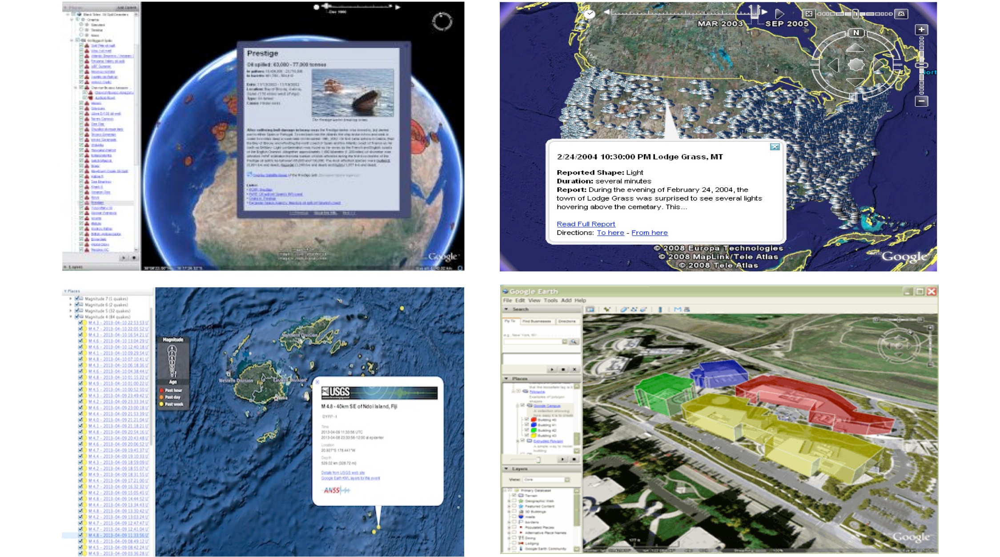

KML¶
Introduction¶
KML, formerly known as Key Hole Markup Language, is an XML language for expressing geographic annotation and visualization for two-dimensional and three-dimensional representations of the Earth. Examples of what can be done in KML are represented bellow.
{kind=link}
- History
KML 2.2 was submitted by Google to be adopted as an OGC standard in 2008.
- Versions
2.2 is the current latest version
- Test Suite
A test suite exist in the OGC repository.
Usage¶
KML is used for:
Annotate Earth features
Specify icons and labels to identify locations on the surface of the planet
Create different camera positions to define unique views for KML features
Define image overlays to attach to the ground or screen
Define styles to specify KML feature appearance
Write HTML descriptions of KML features, including hyperlinks and embedded images
Organize KML features into hierarchies
Locate and update retrieved KML documents from local or remote network locations
Define the location and orientation of textured 3D objects
Relation to other OGC Standards¶
KML is an encoding. Services such as Web Map Service (WMS) and Web Feature Service (WFS) can publish images and features as KML. The reason is that KML is a combination of visualization and data encoding. As seen in the example bellow coordinates and styles are defined in one file.
Example¶
A KML instance is encoded in XML as shown in this example:
<kml xmlns="http://www.opengis.net/kml/2.2">
<Document>
<name>Document.kml</name> <open>1</open>
<Style id="exampleStyleDocument">
<LabelStyle>
<color>ff0000cc</color>
</LabelStyle>
</Style>
<Placemark>
<name>Document Feature 1</name>
<styleUrl>#exampleStyleDocument</styleUrl>
<Point>
<coordinates>-122.371,37.816,0</coordinates>
</Point>
</Placemark>
<Placemark>
<name>Document Feature 2</name>
<styleUrl>#exampleStyleDocument</styleUrl>
<Point>
<coordinates>-122.370,37.817,0</coordinates>
</Point>
</Placemark>
</Document>
</kml>
Details:
The root element is kml
Then a Document element is declared
- A Document contains Placemarks that provide the details of the features. It can contains various elements such as:
name
styleURL
Point